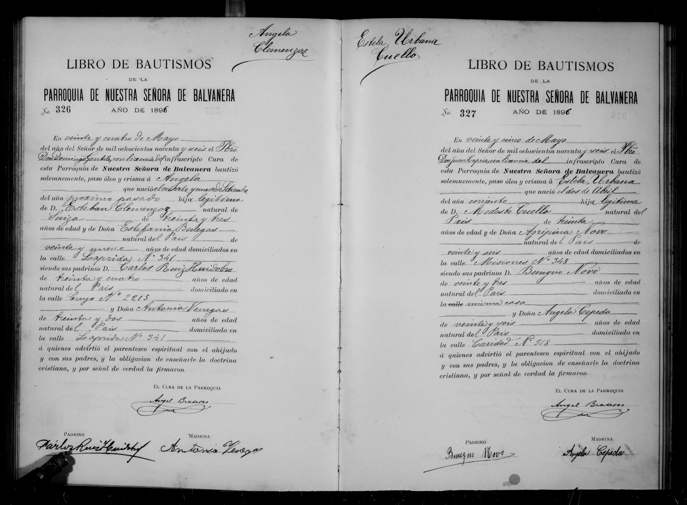
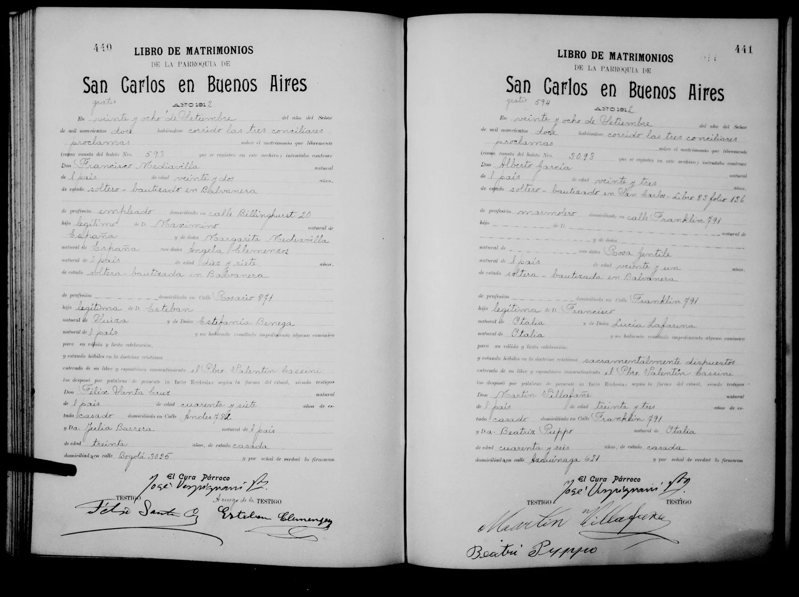

La historia
Ángela nació el 29 de septiembre de 1895 en la ciudad de Buenos Aires y fue bautizada el 24 de mayo de 1896 en la Parroquia de Nuestra Señora de Balvanera (acta N.º 326), por el Pbro. Domingo Gentile con licencia del cura Ángel Brasesco. Su bautismo marca el regreso de la familia a la capital: después de la etapa en San Nicolás de los Arroyos (bautismos de Fortunato Abelardo Clemenzoz, Juan Francisco Clemenzoz y German Cipriano Clemenzoz, 1889–1893), para 1895/96 Esteban y Estefanía vivían en la calle Laprida N.º 341, en Balvanera. El acta la declara hija legítima de Esteban Clemenzoz, «natural de Suiza», de 33 años, y Estefanía Benegas, del País, de 29.
El 28 de septiembre de 1912 — la víspera de cumplir 17: tenía 16 — casó en la Parroquia de San Carlos en Buenos Aires (pág. 440, «gratis», boleto N.º 593) con Francisco Mediavilla: del país, 22 años, soltero, empleado, bautizado también en Balvanera, domiciliado en Billinghurst 20 — la misma cuadra donde la familia Clemenzoz había vivido en 1905 (Billinghurst 45, bautismo de Felisa Clemenzoz): el noviazgo fue casi seguro de vecindad, como el de sus padres en la calle Piedras —, hijo legítimo de Maximino Mediavilla y Margarita Mediavilla, ambos naturales de España. Ella figuró «Ángela Clemenzos», domiciliada en Rosario 871, hija legítima de Esteban («natural de Suiza») y «Estefanía Benega». Los desposó el Pbro. Valentín Cassini — el mismo que dos años después casaría a su hermano Fortunato Abelardo Clemenzoz en la misma parroquia —, con el cura párroco José Vespignani. Fue la primera de tres bodas de hermanos en San Carlos: Ángela (1912), Fortunato (1914) y Germán (1925, German Cipriano Clemenzoz).
Cronología
| Año | Fuente | Qué dice |
|---|---|---|
| 1895-09-29 | Acta de bautismo N.º 326, Parroquia de Ntra. Sra. de Balvanera (Buenos Aires) | Nace en Buenos Aires; hija legítima de Esteban Clemenzoz (33, «natural de Suiza») y Estefanía Benegas (29, del País), calle Laprida 341 |
| 1896-05-24 | Ídem | Bautizada por el Pbro. Domingo Gentile; padrinos Carlos Ruiz Huidobro (34) y Antonia Venegas (32, de la misma casa Laprida 341) |
| 1912-09-28 | Acta de matrimonio, Parroquia de San Carlos (Buenos Aires), pág. 440, boleto N.º 593 | Casa, de 16 años (17 declarados), con Francisco Mediavilla, 22, empleado, hijo de españoles; testigos Félix Santa Cruz y Julia Barrera; firma «a ruego» Esteban Clemenzoz, su padre |
Qué falta / hipótesis
Líneas de investigación
- Buscar hijos de Ángela y Francisco Mediavilla en registros porteños (post-1912)
- Buscar su defunción (¿Buenos Aires?)
- Rastrear a Antonia Venegas (n. ~1864) en San Nicolás de los Arroyos — posible hermana de Estefanía
Fuentes
- Acta de bautismo N.º 326, Parroquia de Nuestra Señora de Balvanera, Ciudad de Buenos Aires, 24-05-1896 (imagen en su ficha)
- Acta de matrimonio, Parroquia de San Carlos en Buenos Aires, pág. 440, 28-09-1912 (imagen en su ficha)
Documentos

